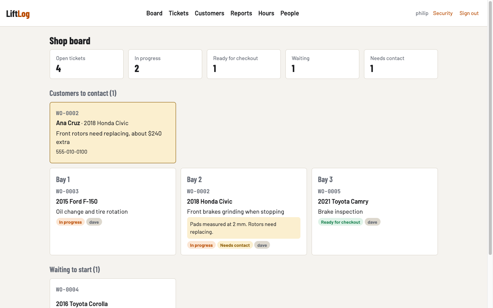
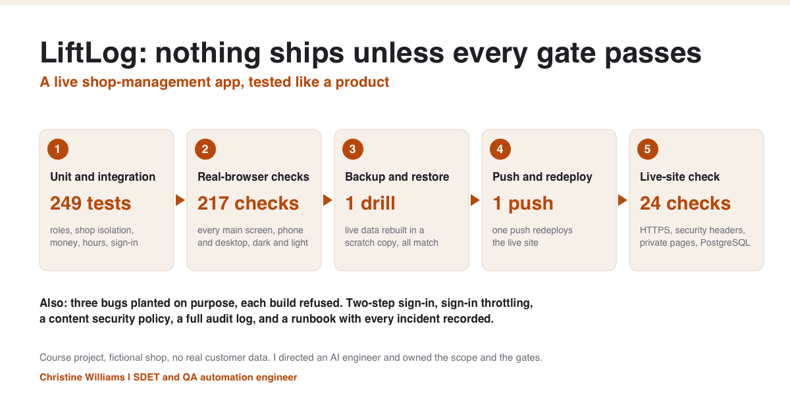
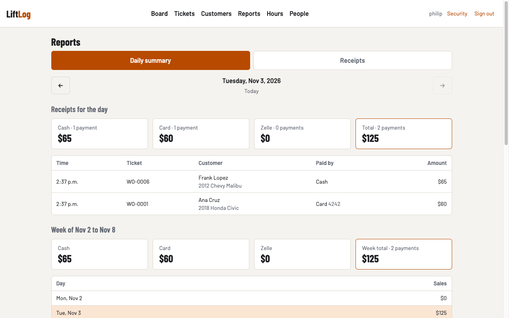

LiftLog
A live shop-management web app for an auto shop: work orders, customers, hours and reports. Built with Django and PostgreSQL and deployed on DigitalOcean.
My role
I directed an AI engineer through the build and owned the requirements and the quality gates.

How I wrote the requirements
I broke the project into eleven stages and kept one engineering guide that recorded every decision with its date. Each stage had a clear definition of done. I also kept a list of what was left out of the first version on purpose, such as refunds, payroll and texting customers, so nothing was dropped by accident.
Quality gates
- 249 unit and integration tests
- 217 real-browser checks across every main screen, on phone and desktop, in dark and light
- A backup-and-restore drill that rebuilds live data in a scratch copy
- 24 read-only checks against the live site after every release

Bugs the gates caught
I tested the gates by breaking the build on purpose three times: a template error, a removed role restriction, and a phone layout that scrolled sideways. Each broken build was refused. Later, a scripted edit by my AI assistant overwrote our main engineering guide with text from another file, and it went into three commits before anyone noticed. We restored it from history, wrote an incident note, and added a test that fails the build if a key document loses its expected content. A mistake that passes silently is the dangerous kind, so now a test guards it.
Security
Role-based access for managers, techs, cashiers and accountants, strict separation of each shop's data, sign-in throttling, two-step sign-in, a content security policy and an audit log of every change.

The code repository is private. I'm happy to walk through it live in an interview.